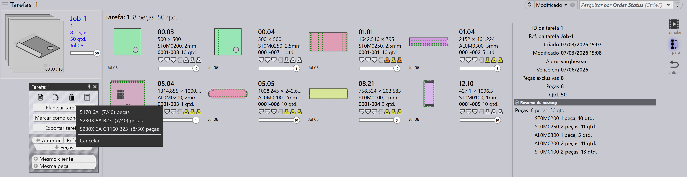
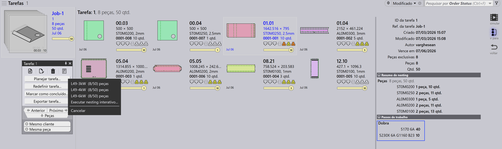
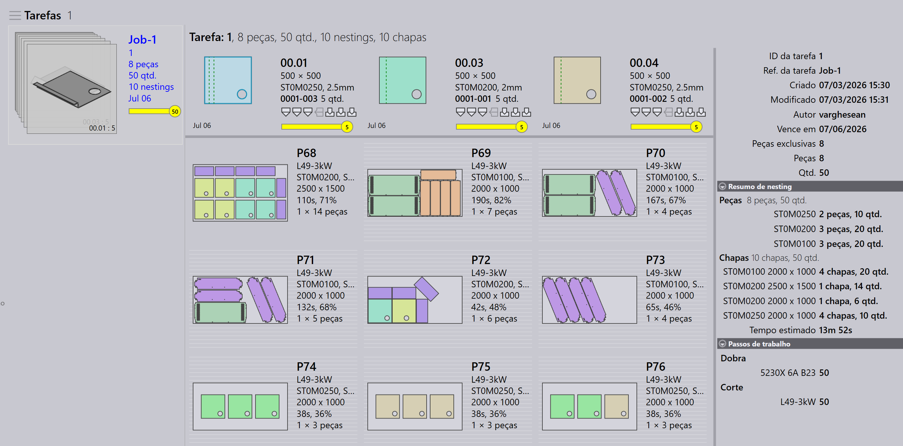
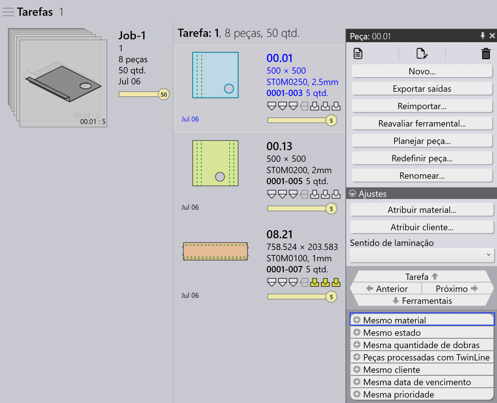
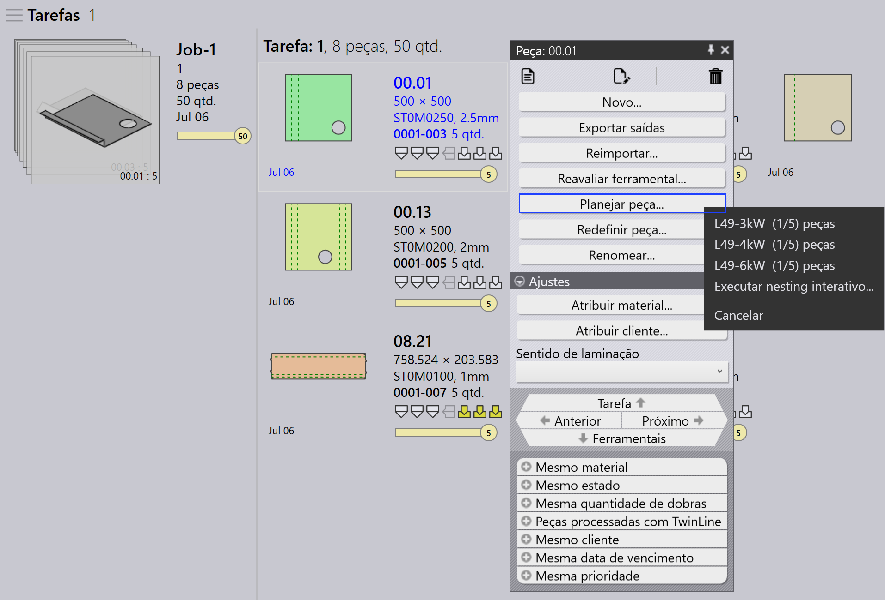
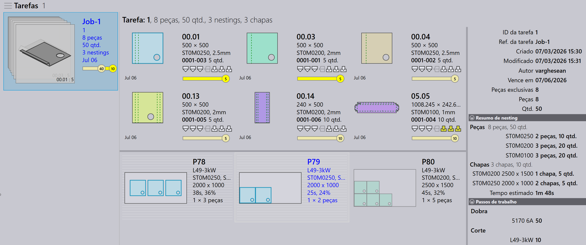

Planejamento automático
O Planejamento Automático automatiza o processo de planejamento para operações de dobra e corte. Ele ajuda a otimizar o uso da máquina, reduzir desperdício de material e gerenciar prioridades de trabalho de forma eficiente.
O fluxo de trabalho geral é primeiro planejar as peças para as máquinas de dobra e depois planejar as peças para as máquinas de corte.
Planejamento de dobra
Um Plano de Dobra define como as peças são distribuídas entre as máquinas de dobra disponíveis.
Exemplo: Plano de Dobra para 5 Peças (10 unidades cada).
-
Clique na opção Planejar tarefa….
-
5 peças (50 unidades) são atribuídas a TBC-5030 B27
-
Após o planejamento, o status do trabalho é atualizado para Bend Planned para um total de 50 unidades. Os passos de trabalho são atualizados com as máquinas de dobra atribuídas e quantidades de peças.


Plano de corte - nesting
Após o plano de dobra, o plano de corte é criado aninhando peças em máquinas de corte adequadas. Existem duas formas de aninhar:
Planejar trabalho para nest - trabalho
Use Planejar tarefa… para aninhar todas as peças no trabalho juntas. O motor de nesting processa automaticamente todas as peças com base na prioridade do trabalho, data de vencimento e material. Isso é ideal quando você deseja que o trabalho inteiro seja aninhado e enviado para a fila de corte de uma vez.
-
Clique em Planejar tarefa… e selecione qualquer máquina.
-
O motor Pmonitor inicia o trabalho de nesting.
-
O motor divide o trabalho conforme necessário para maximizar o uso da chapa.
| Não é possível aninhar atribuindo materiais específicos a máquinas específicas. Por exemplo, você não pode aninhar Material1 na Machine1 e Material2 na Machine2 na mesma operação. |

Aqui, o trabalho inteiro é aninhado em 5 nests na L49-3kw. O status do trabalho é atualizado para 50 : Cutting Queue.
Planejar peça para nest - pedido
Use Plan Part para nesting em nível de pedido — ou seja, aninhar apenas peças selecionadas do trabalho. Tipicamente, você clica com o botão direito em uma peça e escolhe Same Material, para que apenas peças com o mesmo material sejam agrupadas e aninhadas juntas.
Isso é útil quando você deseja controlar quais peças são aninhadas — por exemplo, peças do mesmo material ou um lote específico.


-
Na página de Detalhes do Trabalho, clique com o botão direito em qualquer peça e selecione Same Material. Todas as peças com o mesmo material são selecionadas.
-
Clique em Plan Part… e selecione uma máquina para nesting.
-
O motor processa apenas as peças selecionadas e cria os nests.

Aqui, steel-25 é aninhado na Mits ML3015.